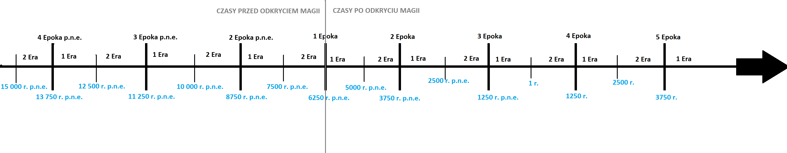

Czym jest Uniwersum G.G.W.P.?
Jest to wielki zbiór historii które miay miejsce na przestrzeni ponad 5 Epok ( okoo 12 500 lat). Wszystkie te wydarzenia miay miejsce na r贸偶nych wiatach.
Czym jest wiat?
wiat to planeta na której istnieje życie (np Ziemia jest wiatem) . Na wwiat mog si dosta istoty z innych wiatów jeżeli maj oni potencja magiczny.
Czy wymiar i wiat to to samo?
Nie. wiat to planeta na której jest życia, a wymiar jest to równolega rzeczywisto cakowicie kontrolowana przez osob która ten wymiar stworzya. (Ilo rzeczy zdefiniowanych w wymiarze zależy od siy posiadacza wymiaru).
Czym jest potencja magiczny?
Każda istota która kiedykolwiek urodzi si w Uniwersum ma możliwo urodzenia si z tzw potencjaem magicznym. Istniejtrzy rodzaje potencjau:
- Peny potencja magiczny - Możliwo używania magii orasz możliwo podr贸偶owania midzy wiatami
- Poowiczny potencja magiczny-Podr贸偶owanie - Możliwo podr贸偶owania midzy wiatami
- Poowiczny potencja magiczny-Magia - Możliwo używania magii
Timeline
Obecnie w Uniwersum mamy 1047r. 5 Epoki
Każda EPOKA ma 2500 lat a każda ERA jest poow epoki wi 1250 lat
Daty zaznaczone na niebiesko to porównanie czasu Etheru do czasu Ziemskiego (czyli to na niebiesko to lata Ziemskie trwaj tyle samo tylko zaczy si w innym momencie)
